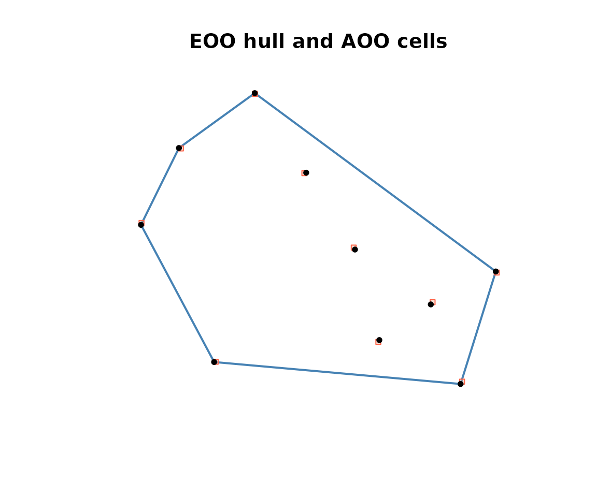

Extent of occurrence and area of occupancy (IUCN criterion B)
Source:vignettes/eoo-and-aoo.Rmd
eoo-and-aoo.RmdWhy criterion B
IUCN criterion B assesses a species’ geographic range through two metrics:
- Extent of occurrence (EOO), the area of the smallest convex polygon that encloses all known sites of occurrence (section 4.9 of the Red List guidelines).
- Area of occupancy (AOO), the total area of occupied cells on a 2 by 2 km reference grid (section 4.10, equation 4.1).
Both metrics need a clean set of occurrence records. In a full
workflow those records come from rl_occurrences(), which
returns an sf POINT object after resolving the IUCN name
against the GBIF backbone and querying under all synonyms.
rl_eoo() and rl_aoo() take that object
directly. They also accept a plain data frame with longitude and
latitude columns, which is what we use here so the vignette stays self
contained.
occ <- data.frame(
longitude = c(2.10, 2.62, 3.01, 2.44, 2.90, 1.83, 2.25, 3.14, 1.97, 2.71),
latitude = c(9.12, 9.53, 9.04, 9.81, 9.33, 9.62, 10.10, 9.45, 9.90, 9.20)
)
head(occ)
#> longitude latitude
#> 1 2.10 9.12
#> 2 2.62 9.53
#> 3 3.01 9.04
#> 4 2.44 9.81
#> 5 2.90 9.33
#> 6 1.83 9.62Extent of occurrence
rl_eoo() projects the coordinates to a local equal area
system, builds the convex hull, and returns its area in square
kilometres along with the criterion B1 threshold the value reaches.
rl_eoo(occ)
#> Simple feature collection with 1 feature and 6 fields
#> Geometry type: POLYGON
#> Dimension: XY
#> Bounding box: xmin: 1.83 ymin: 9.04 xmax: 3.14 ymax: 10.1
#> Geodetic CRS: WGS 84
#> metric area_km2 n_records n_unique method category_b1
#> 1 EOO 10586.91 10 10 convex hull VU
#> geometry
#> 1 POLYGON ((3.01 9.04, 2.1 9....The category_b1 column reports the most threatened band
the area reaches ("CR", "EN" or
"VU"), or NA when it meets none. This is the
spatial threshold only. A full listing under criterion B also requires
at least two of the subconditions (a) severe fragmentation or few
locations, (b) continuing decline, and (c) extreme fluctuation.
The extent of occurrence is undefined with fewer than three unique
locations, since no polygon can be drawn. In that case
area_km2 is NA and a warning is issued.
rl_eoo(data.frame(longitude = c(2.1, 2.6), latitude = c(9.1, 9.5)))
#> Warning: EOO needs at least 3 unique locations, but 2 were found.
#> ℹ The extent of occurrence is undefined and reported as "NA".
#> Simple feature collection with 1 feature and 6 fields (with 1 geometry empty)
#> Geometry type: POLYGON
#> Dimension: XY
#> Bounding box: xmin: NA ymin: NA xmax: NA ymax: NA
#> Geodetic CRS: WGS 84
#> metric area_km2 n_records n_unique method category_b1 geometry
#> 1 EOO NA 2 2 convex hull <NA> POLYGON EMPTYArea of occupancy
rl_aoo() counts the occupied cells of a 2 by 2 km grid
(each cell covering 4 square kilometres) and multiplies by the cell
area.
rl_aoo(occ)
#> Simple feature collection with 1 feature and 6 fields
#> Geometry type: MULTIPOLYGON
#> Dimension: XY
#> Bounding box: xmin: 1.822794 ymin: 9.039459 xmax: 3.15264 ymax: 10.10663
#> Geodetic CRS: WGS 84
#> metric area_km2 n_records n_occupied_cells cell_size_km category_b2
#> 1 AOO 40 10 10 2 EN
#> geometry
#> 1 MULTIPOLYGON (((2.096724 9....category_b2 reports the criterion B2 band in the same
way as category_b1 above. Keep the default
cell_size = 2000, since the criterion B2 thresholds assume
the 2 by 2 km reference scale. Estimating AOO at a finer or coarser
scale gives values that cannot be compared against those thresholds.
Working with an sf object
When you already have an sf POINT object, pass it
straight in. Any coordinate reference system is accepted; geographic
coordinates are reprojected to an equal area system before
measurement.
pts <- sf::st_as_sf(occ, coords = c("longitude", "latitude"), crs = 4326)
rl_aoo(pts)
#> Simple feature collection with 1 feature and 6 fields
#> Geometry type: MULTIPOLYGON
#> Dimension: XY
#> Bounding box: xmin: 1.822794 ymin: 9.039459 xmax: 3.15264 ymax: 10.10663
#> Geodetic CRS: WGS 84
#> metric area_km2 n_records n_occupied_cells cell_size_km category_b2
#> 1 AOO 40 10 10 2 EN
#> geometry
#> 1 MULTIPOLYGON (((2.096724 9....Mapping the polygons
Both functions return an sf object, so the
geometry column carries the polygon behind each metric: the
convex hull for EOO, and the occupied 2 km cells for AOO. Both come back
in the input coordinate system, ready to plot or to write to a spatial
file.
eoo_poly <- rl_eoo(occ)
aoo_poly <- rl_aoo(occ)
pts <- sf::st_as_sf(occ, coords = c("longitude", "latitude"), crs = 4326)
plot(sf::st_geometry(eoo_poly), border = "steelblue", lwd = 2,
main = "EOO hull and AOO cells")
plot(sf::st_geometry(aoo_poly), col = "#f4a58255", border = "tomato", add = TRUE)
plot(sf::st_geometry(pts), pch = 20, add = TRUE)
You can save either polygon with sf::st_write(), for
example sf::st_write(eoo_poly, "eoo.gpkg").
Consistency between the two metrics
By definition AOO sits inside EOO, so EOO should never be smaller
than AOO. When a sparse convex hull makes EOO come out below AOO, the
guidelines recommend raising EOO to equal AOO. rl_eoo() and
rl_aoo() report each metric on its own; combine them and
apply that adjustment when you compile the assessment.